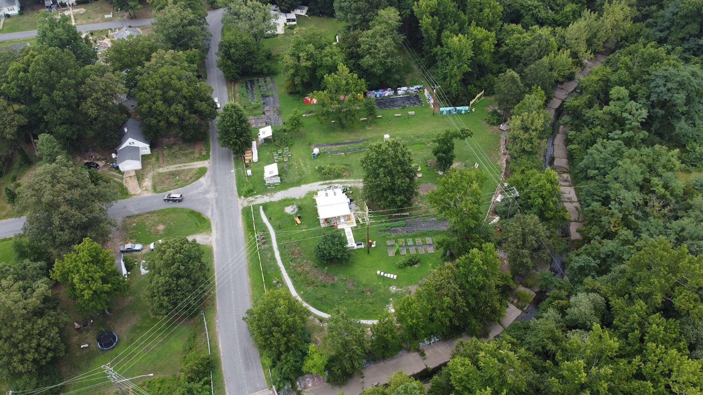
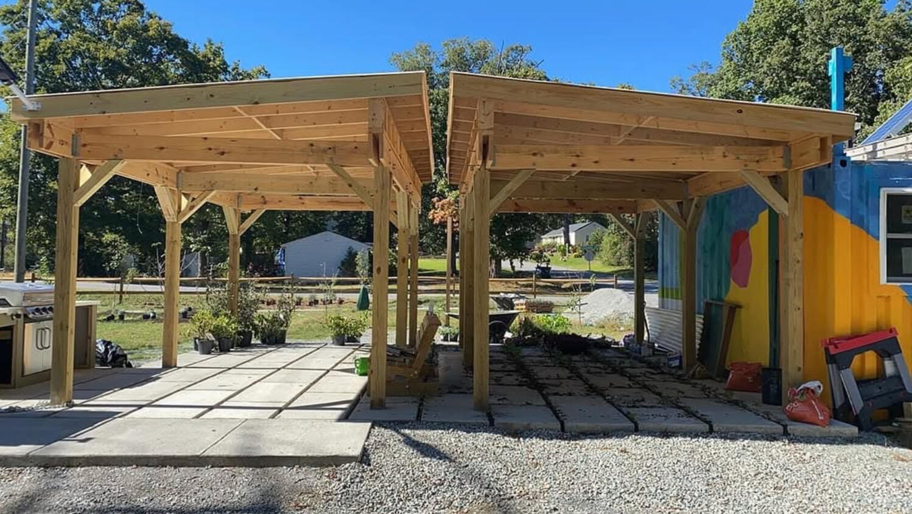

Sankofa Community Orchard located at 309 Covington Rd, Richmond, VA 23225 serves as the central space for this Reimagining Land Justice project.

Sankofa's grand opening occurred in 2021; revealing five acres of green space in Southside Richmond.
Why Sankofa Community Orchard?
"The City of Richmond and local nonprofits have long dedicated efforts to ensure stormwater best management practices are implemented along Reedy Creek to ensure a healthier Chesapeake Bay Watershed. Sankofa Community Orchard has Reedy Creek as boundaries on two of its sides. Our vision for Sankofa Community orchard is that it will serve as a 5 acre BMP using fruit trees and fruiting shrubs as green infrastructure."

Historically, the larger portion of Richmond that is denoted as Southside exists as a result of its annexation from Chesterfield in the 1970’s; an effort to dilute African American political power. As a result of the annexation; there are fewer public greenspaces in Richmond’s Southside. In addition to lack of public greenspace, Southside Richmond also has limited access to healthy food dependent upon where you live. The Sankofa Community Orchard addresses the need for public greenspace while simultaneously addressing community need for food access through the installation of over 80 fruit trees and fruiting shrubs.The Sankofa Community Orchard is a community space that provides access to fresh produce, educational opportunities, and a gathering place for residents. It is part of a broader movement to reclaim land for community use and to promote food sovereignty in urban areas.